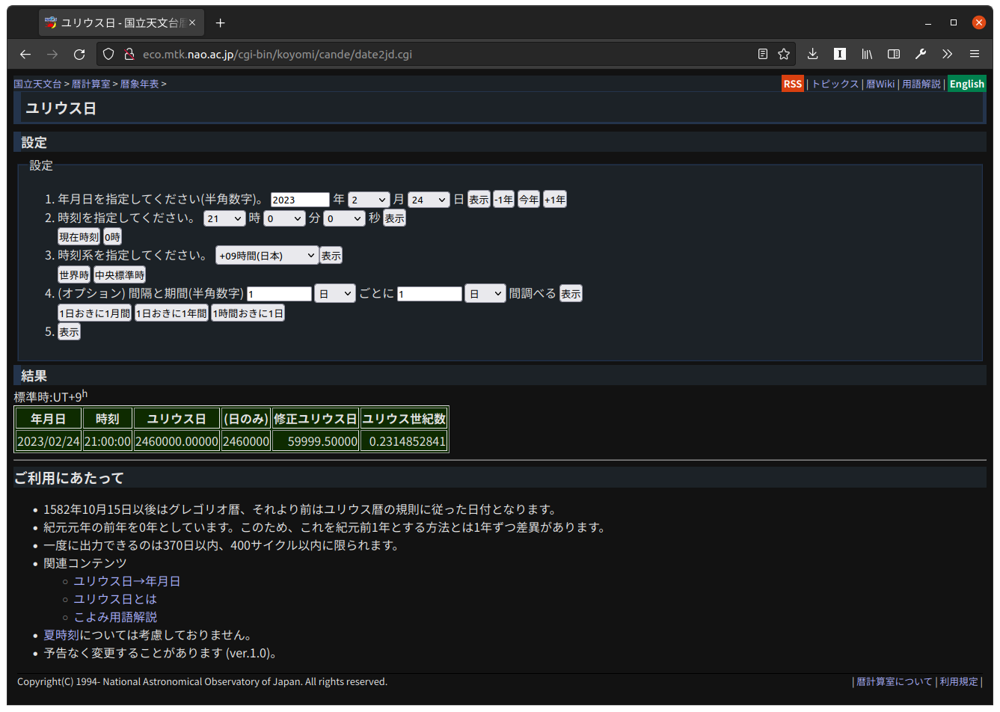

ユリウス日が2,460,000日を超える日

国立天文台から面白い記事が出ている。
この記事によると
令和5年(2023)にはついに246 ****日となる
のだそうだ。 また，この記事にグレゴリオ暦とユリウス日を相互変換するアルゴリズムも書かれている（ちなみにこのアルゴリズムは『天文年鑑』にも載っている）。
実は Go 言語を覚え始めた頃に練習でユリウス日を求める処理を書いたことがあるのだが，アレとは若干アルゴリズムが違うので，拙作 github.com/goark/koyomi のサブパッケージとして追加してみた。
洒落で有理数を扱える big.Rat 型を使っていることを除けば大したアルゴリズムではないので，中身については割愛する1。
興味のある方はリポジトリをご覧ください。
というわけで，記事に書かれているアルゴリズムを使ってユリウス日が2,460,000日を超えるのはいつか調べてみる。
package main
import (
"fmt"
"github.com/goark/koyomi"
"github.com/goark/koyomi/jdn"
)
func main() {
num := 2460000.0
dt := jdn.FromJD(num)
mjd := jdn.GetMJD(dt)
fmt.Printf("Julian Day Number: %.3f (%v)\n", num, mjd.FloatString(3))
fmt.Printf("Gregorian: %v (%v)\n", dt, dt.In(koyomi.JST))
}
これを実行すると
$ go run sample.go
Julian Day Number: 2460000.000 (59999.500)
Gregorian: 2023-02-24 12:00:00 +0000 UTC (2023-02-24 21:00:00 +0900 JST)
となる。 国立天文台のページで検算してみると

と同じ値が出たので，たぶん問題ないだろう2。
参考図書

- 天文年鑑 2022年版
- 天文年鑑編集委員会 (編集)
- 誠文堂新光社 2021-11-22
- 単行本
- 441662140X (ASIN), 9784416621400 (EAN), 441662140X (ISBN)
- 評価
天文ファン必携。2022年版。

- 天体の位置計算
- 長沢 工 (著)
- 地人書館 1985-09-01
- 単行本
- 4805202254 (ASIN), 9784805202258 (EAN), 4805202254 (ISBN)
- 評価
B1950.0 分点から J2000.0 分点への過渡期に書かれた本なので情報が古いものもあるが，基本的な内容は位置天文学の教科書として充分通用する。

- 新こよみ便利帳―天文現象・暦計算のすべて
- 暦計算研究会 (編集)
- 恒星社厚生閣 1991-05-01
- 単行本
- 4769907001 (ASIN), 9784769907008 (EAN), 4769907001 (ISBN)
- 評価
今となっては古い内容だが，暦や天体位置の一覧表が載っていて当時はそれなりに役に立った。

- プログラミング言語Go
- アラン・ドノバン (著), ブライアン・カーニハン (著), 柴田芳樹 (著)
- 丸善出版 2016-06-20 (Release 2021-07-13)
- Kindle版
- B099928SJD (ASIN)
- 評価
Kindle 版出た！ 一部内容が古びてしまったが，この本は Go 言語の教科書と言ってもいいだろう。感想はこちら。
-
ユリウス日の計算程度であれば
float64を使っても全く問題ない。ユリウス日の起点は紀元前4713年1月1日正午（12時）とされているが，もちろんその時代に（グレゴリオ暦はおろか）ユリウス暦があったわけではないし時刻系も今とは異なる。あくまでも現在の暦・時刻系の（過去方向への）延長線上にある仮想的起点と捉えるべきだろう。ユリウス日は日付（整数部）のみを扱う場合は Julian Day Number，時刻（小数部）を含める場合は Julian Date と呼び分けることが多い。今はあまり聞かないが Julian Day Number を日本語でユリウス通日と言う人もいる。時刻を含める場合は UT または UTC で計算する。ちなみに座表時系のひとつである TT (Terrestrial Time; 地球時) への拡張もあるらしい。 ↩︎ -
拙作の
github.com/goark/koyomi/jdnパッケージではグレゴリオ暦しか対応していない。これはtime.Time型がグレゴリオ暦を前提に実装されているため。グレゴリオ暦以外の暦に対応するならtime.Time型は使えないだろう。グレゴリオ暦の導入時期は国によってかなり違うが，欧州では17世紀には概ねグレゴリオ暦に移行したと言われている。日本は1873年（明治6年）のいわゆる「明治の改暦」でグレゴリオ暦互換の暦に移行した（厳密にはグレゴリオ暦ではない）。 ↩︎